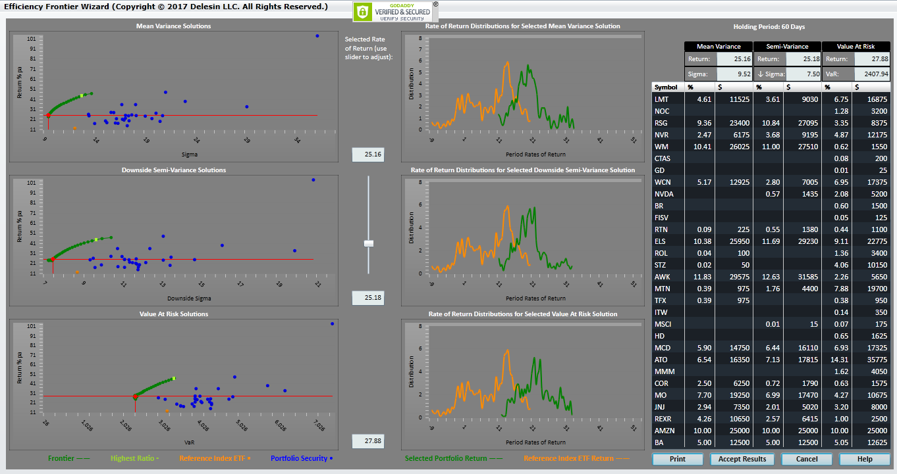

|
<< Click to Display Table of Contents >> Frontier Wizard Results |
  
|
|
<< Click to Display Table of Contents >> Frontier Wizard Results |
|
The Frontier Wizard results are assembled into three parts:
1.the right side of the screen plots of the individual security returns and their variability of return, together with the plot of portfolio solutions for each of the three solution methods;
2.the center of the screen shows the distribution of reference ETF returns (yellow) and the distribution of returns for the selected portfolio (the intersection of the red line with the Frontier) for each of the solution methods;
3.the right side of the of the screen shows the overall portfolio results (top two rows) and the allocation results for each selected security (the following 30 rows).

The Frontier Wizard derive a set of allocations between the minimum and maximum possible target rate of return solutions.
The connected green points show the computed portfolio solutions.
The blue dots show the risk and rewards for each of the selected securities.
The light green point on the solution arc gives the point with the highest return/risk ratio.
The red point shows the specific solution (the target rate of return) intercept on the Frontier arc.
The charts in the middle column display the empirical probability densities of the reference issue (orange) and the respective portfolio rates of return (green). The further the portfolio distribution lies to the right of the reference issue distribution, the greater the "gain" from the portfolio.